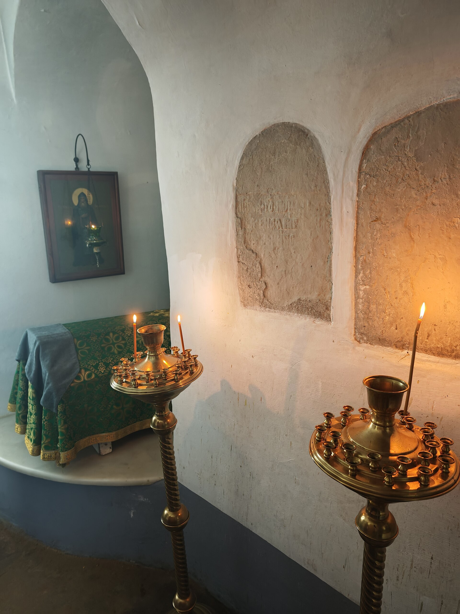
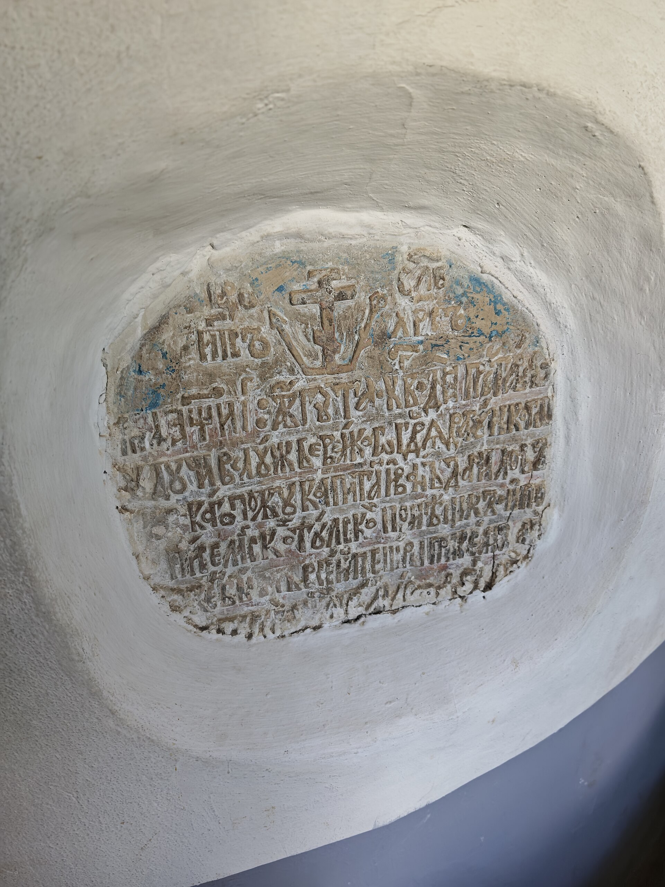
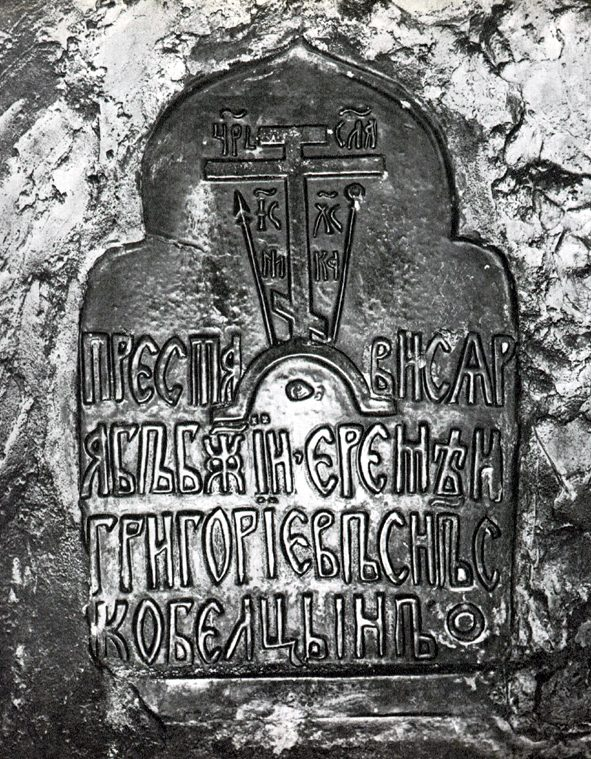

ТОМ II · ЛИСТ R · 06 / 06
ПОДЗЕМЕЛЬЕ
Монастырь, вырезанный в овраге, физическая съёмка и ход, которого никто не показал
Лист исходит из одного документированного места: погребальных пещер Псково-Печерского монастыря. Он ставит то, что фиксируют источники, рядом с мюонной съёмкой 2023 года и легендой о ходе до Изборска и отмечает, что из этого что. Остальные подземные места остаются зацепками.
Пещеры используются с XV века; съёмка 2023 года · Печоры, Псковская область, Российская Федерация · Православное монастырское погребение
R / 01
Кладбище, вырезанное в овраге
Псково-Печерский монастырь в Печорах, у эстонской границы, стоит над системой погребальных пещер. Паломнический справочник называет монастырским кладбищем дальние пещеры и говорит, что сначала пещеры служили только для погребения иноков. Позднее, по его словам, хоронили и мирян, первым записанным был дьяк в 1528 году, а иноки лежали в пятой и шестой из семи галерей. Газетный материал 2023 года насчитывает семь доступных подземных «улиц» общей длиной больше 200 метров.
Цифра, которую повторяют повсюду, — около десяти тысяч погребений. Справочник даёт её как итог, газета повторяет её; ни справочник, ни газета реестра не называют. Лист несёт это число как сообщаемый размер, а не как подсчёт. Статья деловой газеты 2024 года приводит слова главы реставрационной фирмы: найдено 486 керамид — каменных плит, закрывающих проходы к гробницам, — самая ранняя из XV века. Это счёт плит, а не погребений, и лист одно в другое не переводит.



R / 02
Заглянуть за стены
В 2023 году группа физиков, которую по газете возглавляла Наталья Полухина, регистрировала в пещерах атмосферные мюоны (препринт описывает ядерно-эмульсионные детекторы): они проходят сквозь породу и оставляют треки там, где порода тоньше или пуста. Метод неразрушающий. Статья в Bulletin of the Lebedev Physics Institute сообщает о нём для двух объектов пещерного комплекса.
Газетный материал приводит результаты так, как их сообщила группа: потайной ход длиной около 12 м за замурованным склепом, продолжение Троицкой улицы в холм за преградой и неопознанная полость примерно 3 × 6 × 3 м между двумя улицами. Эти размеры — оценки группы в цитате, а не измерения, которые кто-то вскрыл и проверил.
Открытый препринт авторов осторожнее газеты. Использовано тринадцать детекторов: два на чердаке Успенской церкви для измерения фона и одиннадцать под землёй; экспозиция длилась 112 суток. Первый объект — склеп за большой иконой у входа в пещеры, около 2,5 × 2,5 м, с коридором шириной 1–3 м и длиной до 12 м под прямым углом к Главной улице. Второй — полость у Троицкой улицы высотой около 2 м и примерно 3 × 6 м; сама улица, по данным съёмки, продолжается. Формальных погрешностей препринт не даёт, размеры называет грубыми оценками и расходится с газетой в высоте полости (около 2 м против 3 м). Числа погребений он не называет; сказано лишь, что пещеры служили некрополем с основания монастыря.
Тот же материал говорит, что трудно узнать, кто вырыл эти пространства, когда и зачем. Что лежит за стенами — вопрос открытый, и лист оставляет его открытым.
R / 03
Ход до Изборска
И статья деловой газеты 2024 года, и материал «Страны Росатом» 2023 года повторяют легенду, что пещеры тянутся под землёй от Печор до Изборска. Первая называет расстояние около 20 км, второй — около 15 км. «Страна Росатом» подаёт их как сказания о средневековых ходах, а не как проверенные находки, и приписывает рассказ митрополиту Тихону, наместнику монастыря; деловая газета тоже называет это местной легендой.
Легенда оставлена здесь потому, что её рассказывают, а не потому, что она верна. Описанная выше съёмка смотрела на два тупика и к ходу такой длины отношения не имеет.
R / 04
Что источники позволяют сказать
| Утверждение | Источник | Статус |
|---|---|---|
| Пещеры служили местом погребения, сначала иноков | Азбука.ру (дальние пещеры) | Справочная страница; реестр не назван |
| Около 10 000 погребений | Азбука.ру; материал «Страны Росатом» | Сообщаемый итог; не подсчёт |
| Найдено 486 керамид (плит, закрывающих гробницы), самая ранняя — XV века | dp.ru, со слов главы реставрационной фирмы | Сообщаемый счёт плит, а не погребений |
| Семь доступных улиц, свыше 200 м | Материал «Страны Росатом» | Сообщается |
| Потайной ход около 12 м за склепом | Материал «Страны Росатом»; препринт (коридор шириной 1–3 м, длиной до 12 м) | Оценка группы; формальной погрешности нет; журнальная версия не читалась |
| Пещеры идут до Изборска | dp.ru; материал «Страны Росатом» | Легенда; расстояние названо как 20 км и как 15 км |
| Полость у Троицкой улицы, около 2 × 3 × 6 м | Препринт; в материале «Страны Росатом» — 3 × 6 × 3 м | Грубая оценка; два источника расходятся в высоте |
| Число погребений по итогам съёмки | Препринт | Нет: съёмка погребений не считает |

Аппарат источники · связанные листы · термины
Источники этого листа
- azbyka-pechory Азбука.ру (паломнический справочник) — Псково-Печерский монастырь (пещеры) (n.d.)
- anokhin2023 Анохин, Д. — Разгадки подземелий: мюоны помогли найти потайные помещения в монастырских подвалах (2023)
- alexandrov2023 Александров А. Б. и др. (23 автора, среди них Н. Г. Полухина) — Muography of the Cave Church of the Holy Dormition Pskovo-Pechersky Monastery (2023)
- dp2024 Кузьмицкий, Вадим («Деловой Петербург») — Православная Европа: как продвигается реставрация Псково–Печерского монастыря (2024)
- alexandrov2023-preprint Александров А. и др. (23 автора, среди них Н. Полухина) — Muonography of Caves of the Holy Dormition Pskovo-Pechersky Monastery (2023)
Ссылки, даты обращения и ограничения — в списке источников.